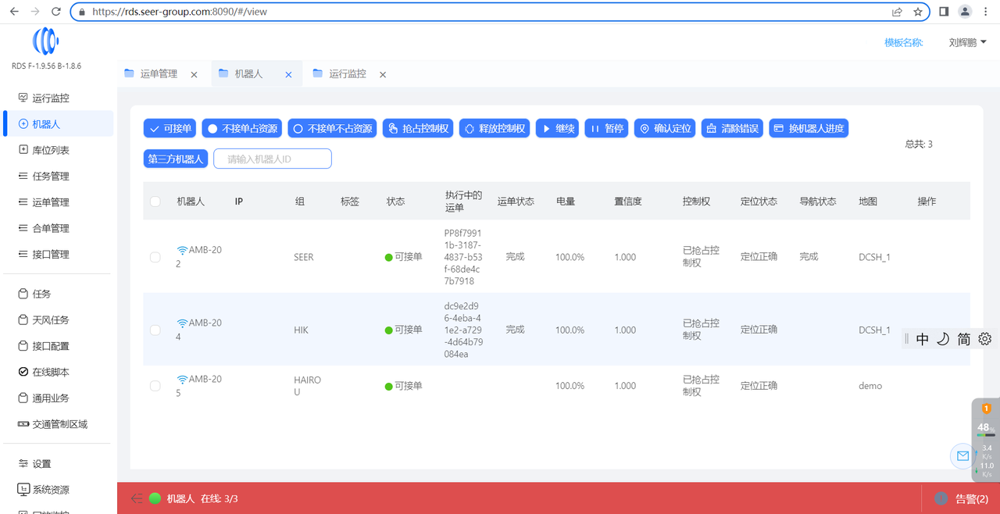

header-v2
RDS 安全相关
Modified August 8, 2024
1.
RDS 系统支持 HTTP 和 HTTPS 两种网络通信协议，通过 RDS 配置参数可开启 HTTPS 通信方式，HTTPS 是在 HTTP 的基础上加上 TSL/SSL 协议构建的可进行加密传输、身份认证的网络协议，可让网络数据传输中增加身份验证与加密通讯，保证传输过程的安全性 。

2.
RDS 对外的定制 API 接口，包括脚本中配置的以 script-api 开头的接口、以及通过【接口配置】界面配置出来的对外 API 接口，这些接口都支持 BasicAuth 接口认证，通过 BasicAuth 接口安全认证，保证对外接口的使用权限安全可控。
BasicAuth 接口认证参考文档：
BasicAuth 接口认证
3.
RDS 支持基于Auth2.0 和 LDAP 的 SSO 单点登录，用户在 RDS 的登录操作，可通过统一认证系统进行用户登录的统一管理和认证。
4.
RDS 系统有完善的角色、用户权限管理功能，可以基于角色配置用户的操作权限，提高数据安全。
5.
RDS 系统针对常见的网络攻击方式，做了针对性的防护和屏蔽，比如 xss 攻击和 sql 注入攻击。